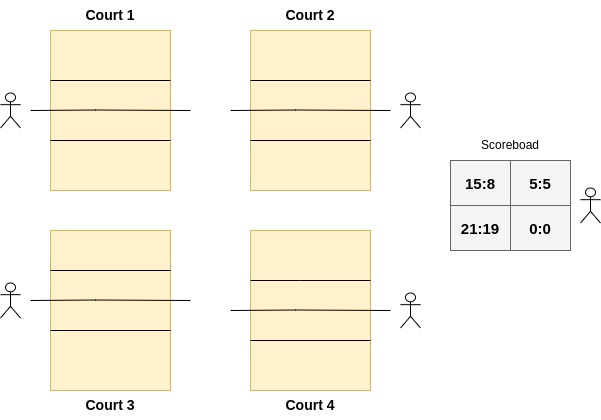

Scoreboard Project Site
Project Overview
Volleyball tournament score collection and standings calculation in real-time.

Solution Overview
Streaming Scorecard scores to Kafka and consuming scores for Scoreboard visualization using WebSockets. Also consuming scores by Spark Streaming for real-time Standings.
Development Stack
- Scala and sbt (compiler and build tool)
- Apache Kafka Java Client library (producer and consumer apis)
- Akka-Http Scala library (Http and WebSocket server)
- Apache Spark Streaming (tournament standings)
- Apache Zeppelin Notebooks (further analysis of tournament)
- D3.js (browser visualization)
Solution - Score Collection
Scorecard data is collected from volleyball courts and posted on Scoreboard.

Solution - Standings
Standings are calculated in real-time as soon as the latest scores arrive.